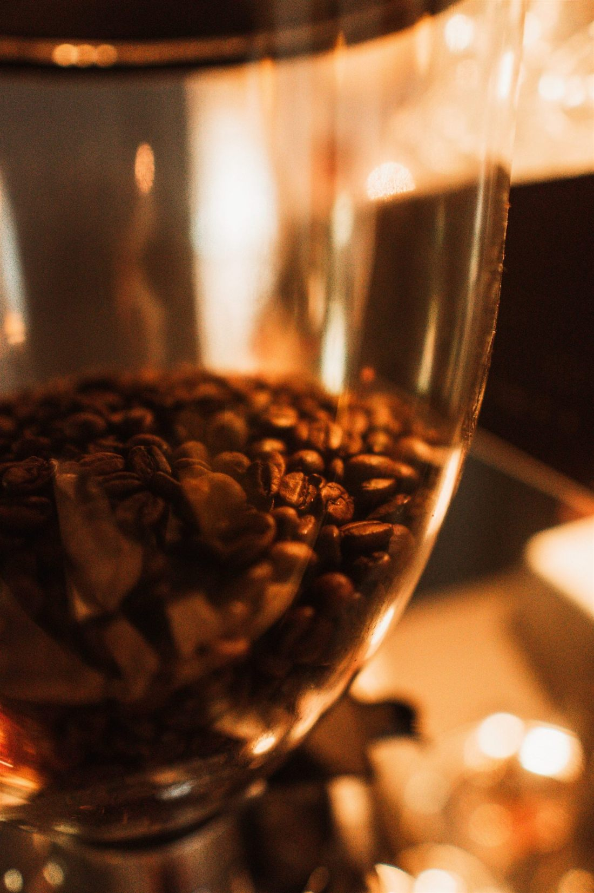
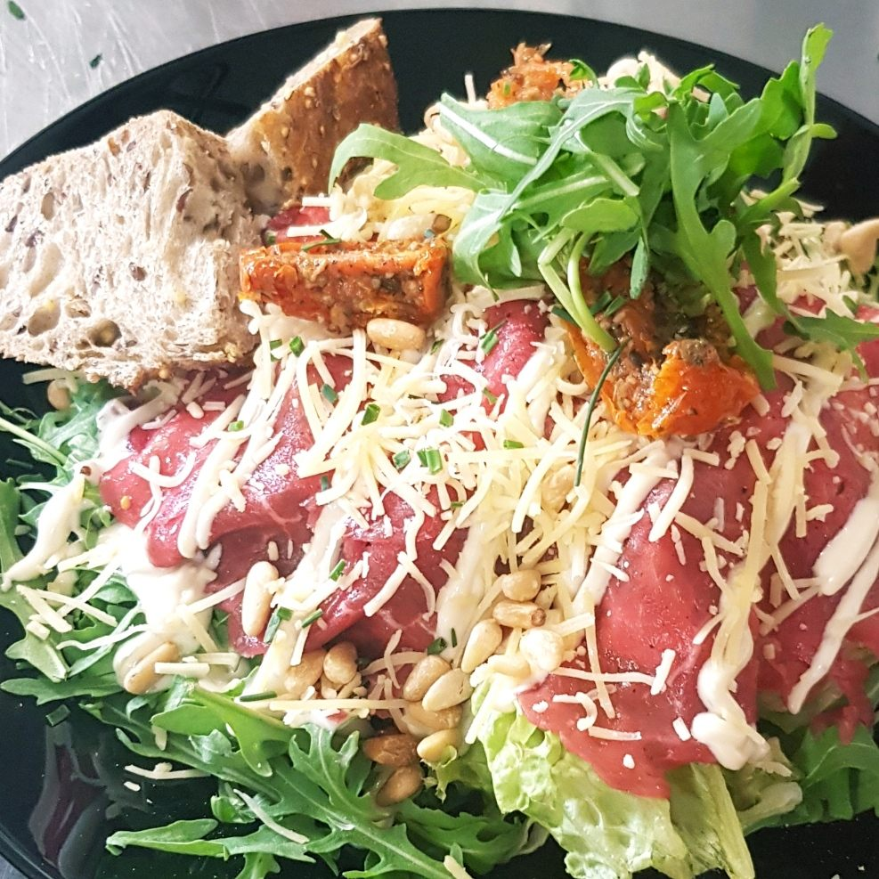
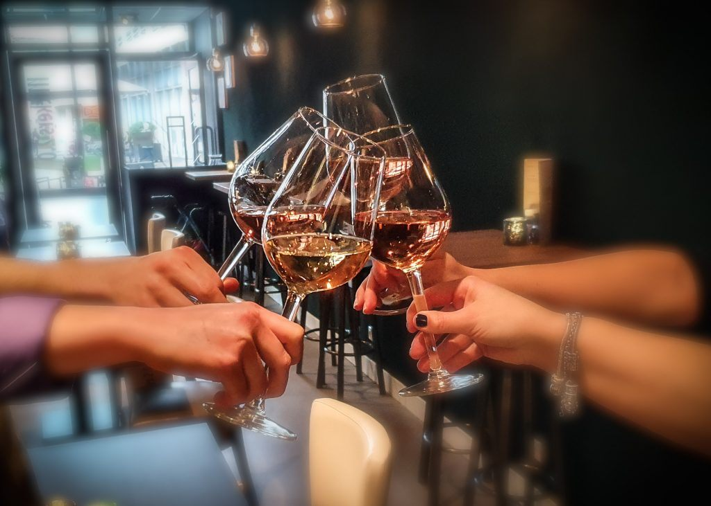
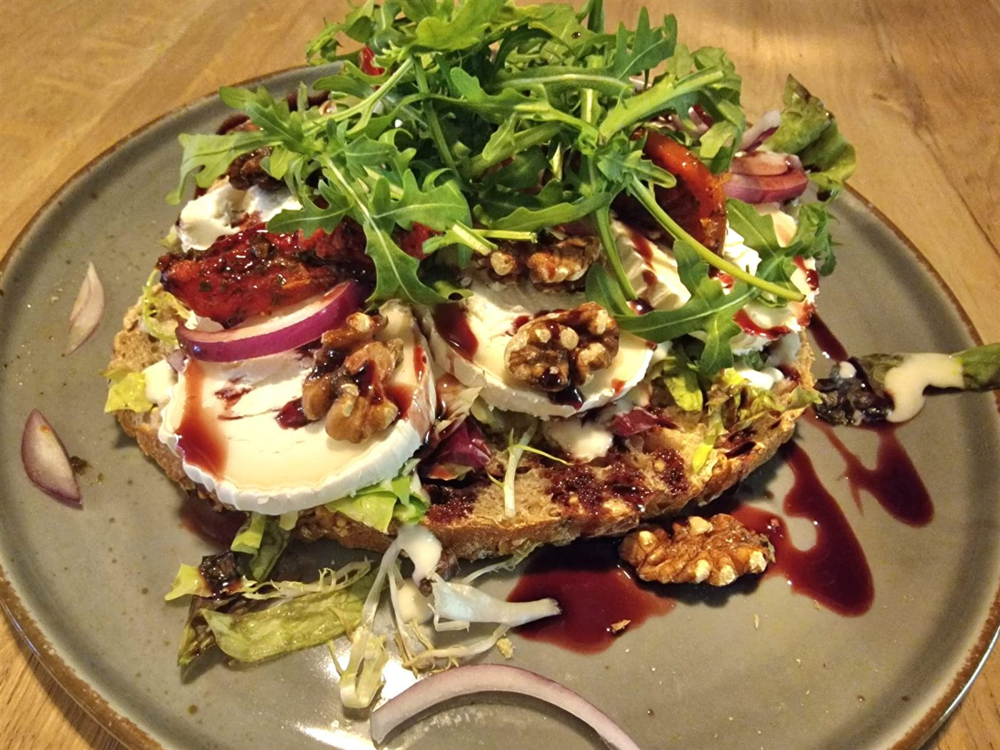
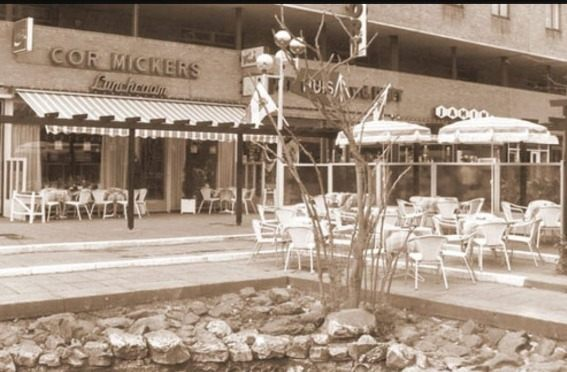
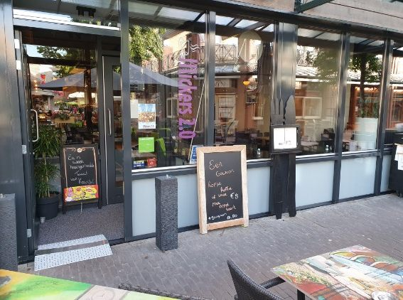

Galerij 12, hartje Uden
Relax, drink je koffie en lach.
Lunchroom Mickers 2.0 in het centrum van Uden. Ontbijt, broodjes, huisgemaakte soepen, high tea en een borrel op vrijdag. Al sinds 1966 staan we hier voor je klaar.

Koffie
We schenken Puro Fairtrade koffie: koffie die je met een goed gevoel drinkt. Van een sterke espresso tot een romige cappuccino of een milde latte.
Ontbijt & lunch
Een frisse salade, een croque monsieur of de ultieme club focaccia. De lekkerste broodjes en huisgemaakte soepen, in een ontspannen sfeer.
Borrelen
Na een drukke dag even ontspannen of de vrijdagavond beginnen met een toast. Op vrijdag zijn we open tot 21.00 uur.
Take away
Bestel via Thuisbezorgd.nl en haal je bestelling op in de lunchroom. Zo werkt het
De menukaart
Onze koks koken elke dag met verse producten en zo min mogelijk verspilling. Allergenen? Vraag het gerust aan onze medewerkers.
Ontbijt
- Ontbijtje traditioneel6,952 Kaiserbroodjes, ham, kaas, jam, roerei en een kleine verse jus d'orange
- Ontbijtplank15,00 p.p.Uitgebreid ontbijt met croissant, boerenbrood, kaiserbroodje, 2 soorten vleeswaren, kaas, zoetwaren, gerookte zalm, roerei, pancakes, kleine jus d'orange en 1 kannetje koffie of potje thee
Soepen
- TafelMick7,00Tafelbrood met diverse smeersels
- Tomatensoep7,00Huisgemaakte tomatensoep met balletjes
- Mosterdsoep7,00Huisgemaakte mosterdsoep met spekjes
- Soep uit de ketel8,00Als de bodem in zicht is, maken onze koks een andere heerlijke soep
- Kleintje soep4,00Al onze soepen kun je ook in het klein bestellen
Koude gerechten
- Boerenmick carpaccio15,00Boerenbrood, carpaccio, oude kaas, zontomaat, truffelmayonaise en pijnboompitten
- Club focaccia16,00Focaccia met kipfilet, kaas, sla, gebakken ei, spek en Mickers-dip
- Mickers plateau deluxe15,00Stel zelf je 3 broodjes samen! Keuze uit carpaccio, brie, kipfilet, grillham, tonijn of zalm
- Zalmtastisch16,00Focaccia met gerookte zalm, rode ui, sla en mosterd-dillesaus
- Boerenbrood tonijn15,00Boerenbrood met tonijnsalade, rode ui, kappertjes en zongedroogde tomaatjes
Croques
- Croque monsieur10,00Franse klassieker met ham, gesmolten kaas en bechamelsaus
- Croque hawaii11,00Met ham, gesmolten kaas, ananas en bechamelsaus
- Croque kip12,00Rijk belegde Franse tosti met kip, kaas, rode ui, rode pesto en bechamelsaus
- Croque inferno12,00Open tosti met extra pittig gehakt, kaas en bechamelsaus
- Toast brie12,00Getoast brood met brie, spek, honing en walnoten
Extra tomaat, spek, ui of champignons bij je gerecht? Dat kan tegen meerprijs.
Salades
- Salade carpaccio17,00Vers gesneden carpaccio met pijnboompitten, oude kaas, rucola, zontomaat en truffelmayonaise
- Vissalade18,00Gerookte zalm, tonijnsalade en butterflygarnalen
- Griekse salade17,00Gemengde sla, tomaat, komkommer, rode ui, olijven, fetakaas en tzatziki

Warme gerechten
- Uitsmijter13,00Op boerenbrood met 3 eitjes, ham en/of kaas
- Boerenuitsmijter14,00"Een ei-genieke ervaring", met spek, ui, kaas en champignons
- Hammetje saté15,00Broodje met grillham, satésaus, sla, champignons, ui en seroendeng
- Mick Mediterraans16,00Broodje warme kip met frisse salade en fetakaas
- Kroketten met brood of friet15,002 rundvlees- of groentekroketten
- 12 uurke16,002 sneetjes brood, ham, kaas, kleine uitsmijter, kroket en een kleine soep naar keuze
- De hele mikmak18,00Kleine soep, broodje carpaccio, kroket en kleine uitsmijter
Van de kaart
- Micksalon15,00Frietjes met reepjes kruidige kip, kaas, salade en aioli
- Huisgemaakte spareribs21,00Met salade en 2 koude sauzen, inclusief friet of wedges
- Schnitzel18,00Met boerenmix, gebakken champignons of champignonroomsaus, met friet of wedges
- Verrukkelijke kipsaté18,00Malse kipsaté met friet, wedges of boerenbrood
- Fish and chips19,002 krokante lekkerbekjes met friet, salade en remouladesaus
Friet
- Puntzak friet4,25
- Puntzak friet met mayonaise5,00
Snacks, broodjes en sauzen bij de friet: vraag naar de prijzen in de lunchroom.
Zoetigheid
- Dame blanche8,00Zacht vanille-ijs, rijke chocoladesaus en slagroom
- Coupe van het seizoen9,00Altijd anders
- Huisgemaakte roombotercake3,00
- Warme wafelsMet poedersuiker, warme kersen of chocoladesaus. Upgrade met slagroom en/of een bolletje vanille-ijs tegen meerprijs
Kijk in de vitrine en ontdek welk lekkers er vandaag voor je klaarstaat: elke dag een nieuwe verleiding.
High tea
26,00 p.p.
Een feest van zoet en hartig, geserveerd met thee en/of filterkoffie. Reserveer minimaal 1 dag vooraf.
"Het lekkerste excuus om uren te tafelen."
High tea reserverenBorrelhapjes
- Mega borrelplank13,50 p.p.Een goed gevulde borrelplank
- Bittergarnituur, 12 stuks10,50
- Bitterballen, 12 stuks10,00
- Crispy chicken, 8 stuks10,50
- Worstenbroodje4,00
- Saucijzenbroodje4,00
- Nacho's met gehakt11,50

Koffie
- Filterkoffie2,90
- Grote filterkoffie3,95
- Kannetje filterkoffie6,40
- Café crème3,15
- Espresso3,00
- Dubbele espresso4,10
- Cappuccino3,30
- Koffie verkeerd3,85
- Latte macchiato4,15
- Wiener melange4,50
- Flat white4,90
Specials
- Toffie koffie6,00Latte macchiato met karamelsiroop, karamelblokjes en slagroom
- Special van de maand6,00
- Café frappé5,50
- Café glacé7,00Koude koffie met een bol vanille-ijs en slagroom
Thee
- Thee3,10Rooibos, english breakfast, earl grey, groene thee, citroen (groen), jasmijn, aardbei, bosvruchten, appel/kaneel of kamille
- Potje thee4,95
- Verse muntthee4,10
- Verse gemberthee4,10
- Chai latte4,50
Warme chocolade
- Warme chocomel4,00
- Warme chocomel met slagroom5,00
Erbij
- Portie slagroom1,00
- Siroop0,95Karamel, vanille, hazelnoot of witte chocolade
- Decaf+ 0,25
Verfrissend
- Coca-Cola of Coca-Cola Zero3,20 / 4,95200 ml / 330 ml
- Fanta Orange Zero3,20
- Fanta Cassis3,20
- Sprite Zero3,20
- Chaudfontaine plat of bruisend3,20 / 7,50250 ml / 750 ml
- Lipton Ice Tea of Ice Tea Green3,20
- Rivella3,20
- Fristi3,20
- Chocomel3,20
- Mystic Elixir4,00Gebrouwen tijdens een volle maan door Ranj
Van de Boom by Riedel
- Biologisch perensap3,20
- Biologisch appelsap3,20
Premium soda's
- Royal Bliss Tonic Water3,25
- Royal Bliss Bitter Lemon3,25
Huisgemaakte sappen
- Verse jus d'orange5,00
- Tropical Island7,25Smoothie van mango, ananas en appel
- Strawberry Paradise7,25Smoothie van aardbei, framboos, mango en appel
Wijn glas / fles
- Avoir la Pêche, chardonnay5,00 / 19,50Witte wijn met tonen van perzik en citrus
- Freude Niersteiner5,00 / 19,50Zoete witte wijn uit Rheinhessen
- Grape Valley Pinot Grigio Blush5,00 / 19,50Rosé
- Grape Valley Merlot5,00 / 19,50Rode wijn
Lekker trek: bieren
- Birra Moretti van de tap
- Affligem Belgisch Wit, Blond, Dubbel en Tripel
- Amstel Rosé
- Texels Skuumkoppe, fris bier met een bittere afdronk
Alcoholvrij en -arm
- Heineken 0.0%
- Affligem Blond 0.0%
- Amstel Radler 0.0% en 2%
Bierprijzen vind je op de drankenkaart in de lunchroom.
Voor de kleine gasten
- Kindersoep naar keuze: tomaat, mosterd of soep van het seizoen
- Kindertosti
- American pancakes
- Broodje kaas, ham of jam
- Worstenbroodje of saucijzenbroodje
- Pasta
Met frietjes
- Kinder-micksalon: friet met kip, aioli en salade
- Frietjes met een kroket of frikandel en mayonaise
- Knapperige frietjes met kibbeling
- Mini kipsaté met friet en sausjes
- En natuurlijk een Mystic Elixir
De prijzen staan op de kinderkaart (pdf).
De originele kaarten als pdf: voorkant, menukaart 1, menukaart 2, drankenkaart en kinderkaart.

Iets te vieren?
Iedereen heeft weleens iets te vieren. Een verjaardag, een promotie, een geboorte, een jubileum, een personeels- of verrassingsfeest. Voor grote groepen en kleinere gezelschappen is Mickers 2.0 uitermate geschikt.
Kom ook eens voor een van onze belevenissen: een high tea, high wine of high beer.
"Een goede lunch brengt mensen samen."
Van Cor Mickers Lunchroom naar Mickers 2.0
Wat maakt Mickers 2.0 zo bijzonder dat mensen hier blijven terugkomen? Brabantse gezelligheid, en een lunchroom in hartje Uden die geen doorsnee lunchroom is.


- 1966
Cor en Betsie Mickers openen de deuren van Cor Mickers Lunchroom, met gastvrijheid, huiselijkheid en kwaliteit hoog in het vaandel.
- 1980
Zoon Marcel Mickers neemt de zaak over van zijn ouders.
- 1997
Na 17 jaar neemt broer Twan Mickers het stokje over, en runt de lunchroom net als zijn voorgangers met veel passie.
- 2.0
Na een fikse brand in het appartement boven de lunchroom bouwt Twan de zaak opnieuw op, onder de naam Mickers 2.0.
- Nu
Na 22 jaar ondernemen verkoopt Twan het bedrijf aan de huidige eigenaar, Boy Croonen. Bij hem staat één ding voorop: de gast gaat met een goed en voldaan gevoel naar huis.
Openingstijden
| Maandag | 9.00 – 17.30 |
|---|---|
| Dinsdag | 9.00 – 17.30 |
| Woensdag | 9.00 – 17.30 |
| Donderdag | 9.00 – 17.30 |
| Vrijdag | 9.00 – 21.00 |
| Zaterdag | 9.00 – 17.00 |
| Zondag | gesloten |
De laatste zondag van de maand zijn we open van 11.00 tot 17.00. De keuken sluit een half uur voor sluitingstijd.
Feestdagen
- 1e en 2e paasdag: gesloten
- Hemelvaartsdag: gesloten
- 1e en 2e pinksterdag: gesloten
- Koningsdag: lunchroom gewoon open
- 5 december: 9.00 – 16.00
- 1e en 2e kerstdag: gesloten
- 31 december: 9.00 – 16.00
- 1 januari: gesloten
Pakketpunt
Bij ons kun je ook terecht voor pakketjes van DHL, Homerr en Wish.
| Maandag t/m donderdag | 9.00 – 17.00 |
|---|---|
| Vrijdag | 9.00 – 20.00 |
| Zaterdag | 9.00 – 17.00 |
| Zondag | gesloten |
Afwijkende tijden pakketpunt
- Laatste zondag van de maand: 11.00 – 17.00
- 1e en 2e paasdag, Hemelvaart, 1e en 2e pinksterdag: gesloten
- Koningsdag: pakketpunt gesloten
- 5 december: 9.00 – 15.30
- 1e en 2e kerstdag: gesloten
- 31 december: 9.00 – 15.00
- 1 januari: gesloten
Reserveer je tafel
Laat hieronder weten wanneer je komt. Zet eventuele opmerkingen in het berichtvak.
- High tea? Zet "High Tea" in het berichtvak en reserveer minstens 1 dag van tevoren.
- Voucher van Social Deal? Plaats je reservering dan via de site van Social Deal.
Liever bellen? 0413 265 245
Afhalen
Bestel gemakkelijk online via Thuisbezorgd.nl en haal je bestelling af in onze lunchroom aan de Galerij. Bezorgen aan huis doen we helaas nog niet.
Kom je bij ons werken?
We zoeken een medewerker of medewerkster bediening, een zelfstandig werkend kok, een leerling-kok, een zelfbenoemde kok en een chefke afwas!
Heb jij altijd hoofdpijn, geen zin om te werken, een hekel aan mensen, of blijf je liever in bed? Helaas, dan zoeken wij jou niet.
Wat zoeken we wél?
- Een gezellige dame of heer met ervaring in de horeca
- Die weet van aanpakken en reuze gemotiveerd is
- Die van mensen houdt en goed met gasten omgaat
- Die meedenkt met het team en vol ideeën zit
- Die een beetje van "horecapraat" houdt, en van slechte humor
Loop rustig even binnen voor een kop koffie, mail naar info@mickerslunchroom.nl of bel 0413 265 245.
Zo vind je ons
Mickers 2.0Galerij 12
5401 GD Uden
0413 265 245
info@mickerslunchroom.nl
De route
Je hebt vast honger, want je bent op zoek naar onze lunchroom. Geen zorgen, we hebben alles voor je klaarstaan.
- Startpunt: je huidige locatie. Laat je niet afleiden door snackautomaten of fastfoodkramen.
- Sla rechtsaf bij de geur van versgebakken croissants.
- Blijf de gezelligheid volgen.
- Voor je het weet ben je er: Galerij 12.